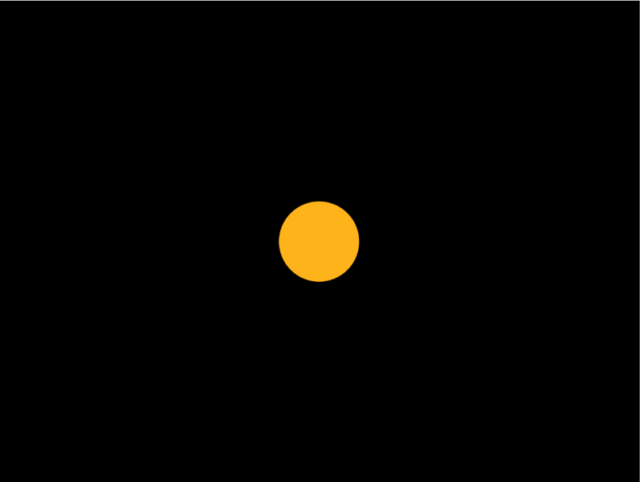
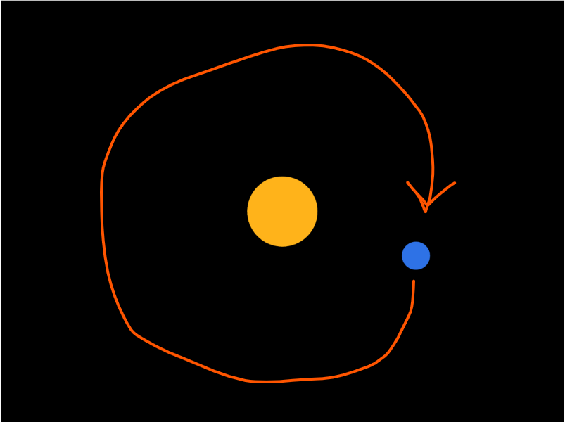
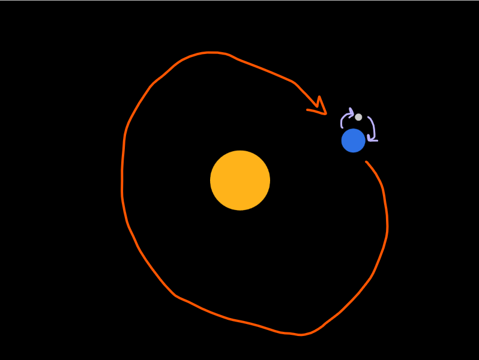
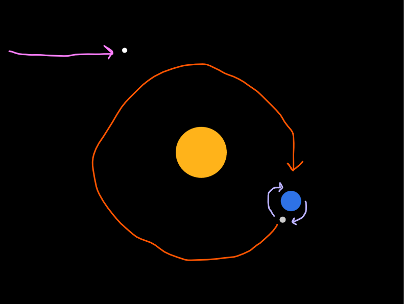
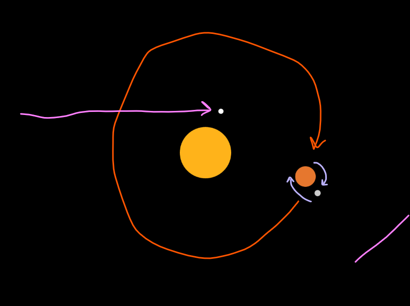
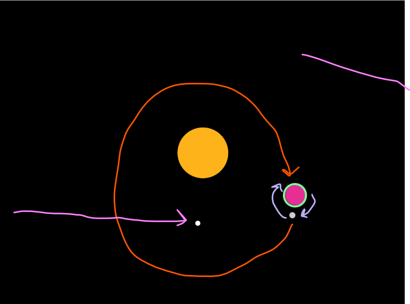

Solar System
A planet goes around the sun, a moon goes around the planet, and a shooting star flies across the screen every 3 seconds.
How It Evolved
1. The sun
I started with one orange circle in the center of the screen as the sun.

2. The planet orbits
I added a planet and used cos() and sin() with millis() to move it in a circle around the sun. This is the repeated motion.

3. The moon
I added a moon that orbits the planet 4 times faster. Because the speeds are different, the two motions are out of sync, which makes the movement more interesting.

4. The shooting star
I added a small white circle that moves to the right by adding 10 to its x position every frame.

5. A new star every 3 seconds
The star flew off the screen and never came back, so I used setInterval() to send it back to the left every 3 seconds. Each time it comes back at a random height using random().

6. Changing colors
I used a second setInterval() to give the planet a random HSB color every 2 seconds. Since this is 2 seconds and the star is 3 seconds, they don't happen at the same time.
